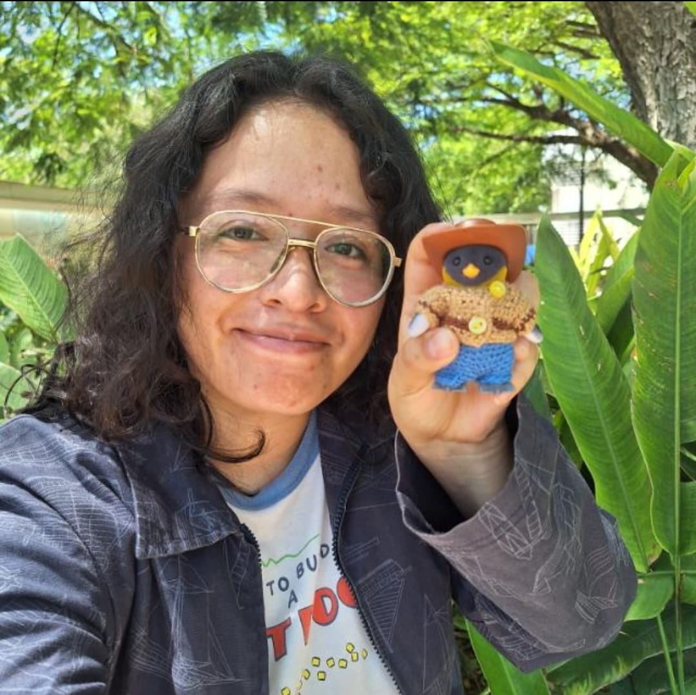

Soy Jessica Martínez
Desarrolladora web junior de día, bióloga marina de noche. Y vivo enamorada de las aves

Habilidades técnicas
Conocimiento en la estructura y semántica de documentos web.
Habilidades para crear interactividad y dinamismo en sitios web.
Capacidad para diseñar y estilizar la presentación de páginas web.
Experiencia
Profesional y académica
Bióloga marina con experiencia en el monitoreo de aves en el estado de Yucatán y actualmente entrando al mundo del desarrollo web.
Conoce mis proyectosHabilidades blandas
Habilidad para guiar y motivar equipos hacia metas comunes.
Capacidad para colaborar de manera efectiva y contribuir a proyectos grupales.
Habilidad para expresar ideas y opiniones de manera clara y respetuosa.
Mis Hobbies e Intereses
Cuando no estoy programando, me gusta:
Dibujar 🎨
Pintar 🖼️
Esculpir 🏺
Ver videos de YouTube 📺
Ver películas animadas 🎬
Escuchar música 🎧
Jugar videojuegos con amigos 🎮
Observar aves 🐦